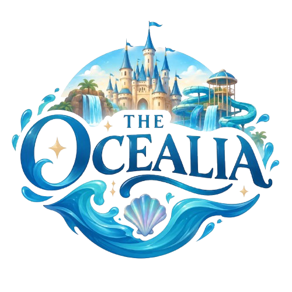

Adrenalina Acuática
Toboganes de caída libre, piscinas de olas épicas y ríos rápidos. Siente la fuerza del océano en atracciones diseñadas para los más valientes.

Sumérgete en reinos mágicos. Explora impresionantes atracciones acuáticas, montañas rusas de leyenda y valles encantados para toda la familia.
Toboganes de caída libre, piscinas de olas épicas y ríos rápidos. Siente la fuerza del océano en atracciones diseñadas para los más valientes.

Montañas rusas que surcan los cielos, carruseles mágicos y bosques interactivos. Diversión sin mojarte rodeado de fantasía pura.
Disfruta de nuestros restaurantes temáticos, zonas de descanso premium y tiendas de magia. Consigue tus pases online y ahorra tiempo en las taquillas.
Reservar ahora